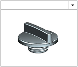
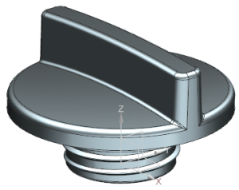
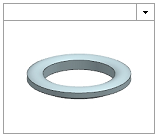

打开部件
-
打开您的油箱盖部件文件副本—XXX_oil_cap，或者打开 des07_oil_cap_01。

如果打开的是提供的部件，选择文件→另存为以保存一个副本，将 des07替换为您的名字首字母缩写。

-
打开垫圈文件 XXX_oil_cap_gasket，或者打开 des07_oil_cap_gasket_01。

如果打开的是提供的部件，选择文件→另存为以保存一个副本，将 des07替换为您的名字首字母缩写。

-
查看窗口菜单以确保两个部件都已加载。
在创建装配前并不需要打开所有部件。但可以让您在创建装配前确保已找到所有部件。